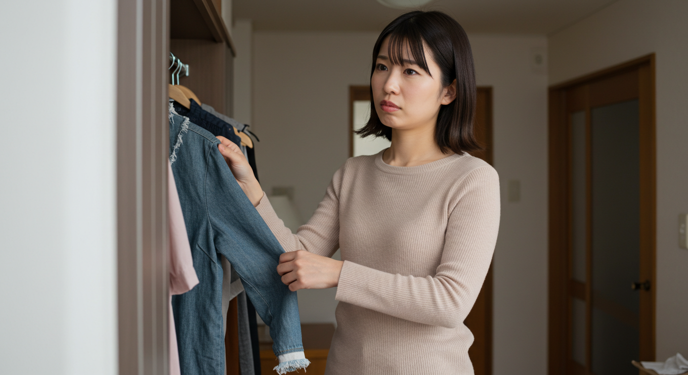
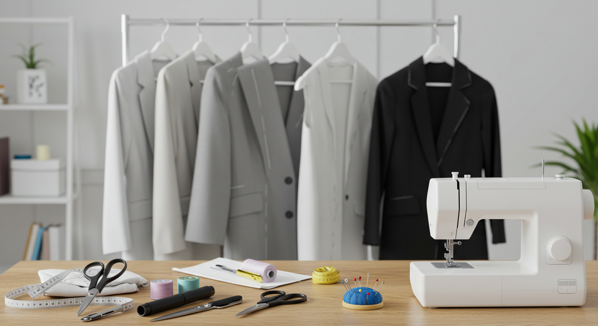
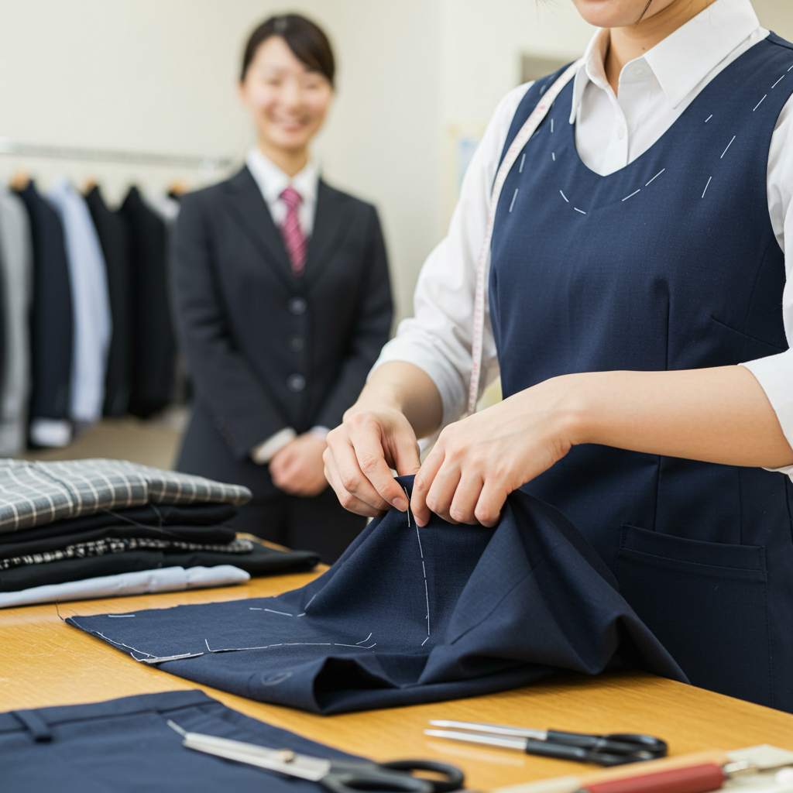
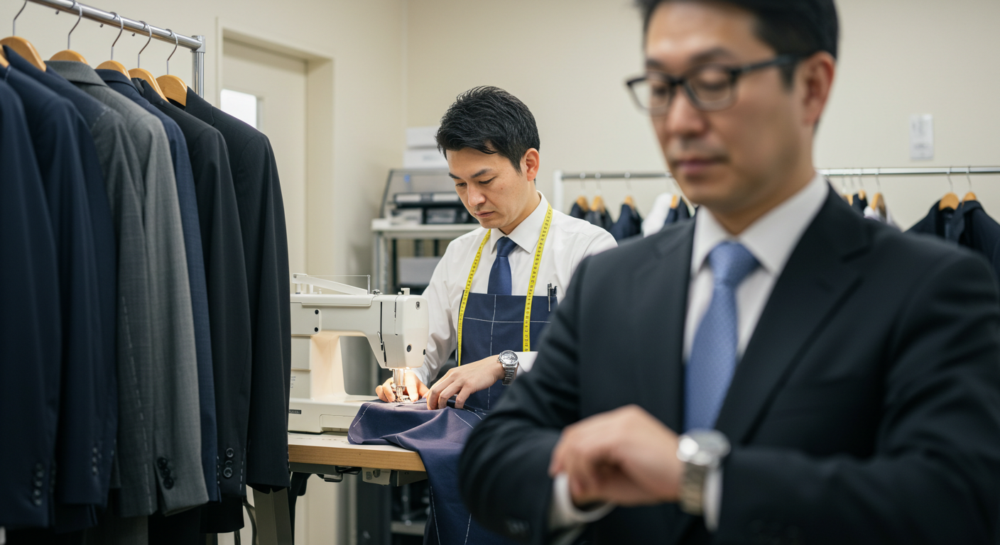

リフォーム三光サービスで洋服お直し！忙しいあなたも安心の理由

導入

クローゼットを開けるたびに、少しだけ心が曇る瞬間はありませんか。「デザインは大好きだけど、少しだけサイズが合わなくなってしまったお気に入りのワンピース」「インターネットで買ったけれど、思ったより丈が長かった新品のパンツ」「大切な人から譲り受けた、思い出の詰まったジャケット」
愛着があるからこそ、手放したくない。でも、今のままでは着ることができない。そんな洋服たちが、クローゼットの片隅で静かに眠っている……。多くの方が、一度はそんな経験をされているのではないでしょうか。
忙しい毎日の中では、ボタンがひとつ取れただけでも、ついつい後回しにしてしまいがちです。ましてや、サイズ直しやデザインの変更となると、どこに頼めばいいのか、料金はいくらかかるのか、そもそもこんなお直しは可能なのか、わからないことだらけで途方に暮れてしまうかもしれません。
「もう捨てるしかないのかな……」そんな風に諦めてしまう前に、ぜひ知っていただきたい選択肢があります。それが、「洋服のお直し」という、愛着のある一着に新しい命を吹き込む方法です。
そして、その大切な一着を安心して任せられる場所が、今回ご紹介する「リフォーム三光サービス」です。
リフォーム三光サービスは、単に洋服を修理するだけの場所ではありません。それは、お客様一人ひとりの「この服を、もっと素敵に着たい」「この思い出を、これからも大切にしたい」という想いに、熟練の技術と心遣いで応えてくれる、洋服のプロフェッショナル集団です。
この記事では、なぜリフォーム三光サービスが、日々の仕事や家事、育児に追われる忙しい現代の私たちにとって、心強い味方となってくれるのか、その理由を一つひとつ丁寧に紐解いていきます。
サービスの全体像から、具体的なお直しの内容、そして利用することで得られるたくさんのメリットまで。この記事を読み終える頃には、あなたのクローゼットで眠っているあの洋服を、もう一度輝かせるための具体的な一歩が、きっと見えているはずです。
さあ、一緒にリフォーム三光サービスの扉を開けて、洋服との新しい付き合い方を見つけてみませんか。
リフォーム三光サービスとは？洋服お直しのプロ集団

洋服のお直しと聞くと、街の小さな仕立て屋さんや、デパートの片隅にあるカウンターを思い浮かべる方が多いかもしれません。もちろん、そうした場所も素晴らしい技術を持っていますが、「リフォーム三光サービス」は、それらとは一線を画す、総合的なファッションケアを提供するプロフェッショナル集団です。
彼らは単に「直す」という作業を行うだけではありません。お客様がその洋服を手に取った時のときめきや、それにまつわる思い出、そして「これからどう着ていきたいか」という未来のイメージまでを大切に受け止め、最適な形で実現するためのパートナーなのです。
ここでは、そんなリフォーム三光サービスが一体どのような場所なのか、なぜ多くの人から信頼され、選ばれ続けているのか、その根幹にある魅力と特徴を詳しくご紹介していきます。彼らがどのような想いで一着一着の洋服と向き合っているのかを知ることで、あなたの大切な洋服を安心して預けられる理由が、きっとお分かりいただけるでしょう。
対応範囲１．どんな洋服のお直しに対応している？
「こんな服でも、お直ししてもらえるのかな？」大切な一着を前にして、まず最初に頭に浮かぶのは、そんな素朴な疑問かもしれません。特に、特殊な素材であったり、デザインが凝っていたりすると、相談すること自体をためらってしまうこともあるでしょう。
しかし、リフォーム三光サービスの最大の魅力の一つは、その驚くほど広い「対応範囲」にあります。彼らの手にかかれば、クローゼットに眠るほとんどの衣類が、再び輝きを取り戻す可能性を秘めているのです。
日常着からフォーマルウェアまで、あらゆるアイテムに対応
まず、対応しているアイテムの種類が非常に豊富です。例えば、毎日のように活躍するカジュアルウェア。着心地が良くて何度も洗濯を繰り返したTシャツの首元のヨレや、お気に入りのジーンズの膝に開いてしまった穴。こうした日常的なダメージも、リフォーム三光サービスなら丁寧に補修し、再び気兼ねなく着られる状態へと導いてくれます。デニムのリペアなどは、ただ穴を塞ぐだけでなく、デザインの一部として楽しめるような「味」のある仕上がりを提案してくれることもあります。
もちろん、ビジネスシーンで活躍するスーツやジャケット、シャツもお任せください。昇進や体型の変化で合わなくなったジャケットの肩幅調整や、パンツのウエスト出し・詰めなど、ミリ単位での調整が求められるお直しも、プロの技術で完璧に仕上げます。くたびれてしまった襟や袖口を交換するだけで、スーツ全体が見違えるように生き返ることも少なくありません。
そして、特別な日のためのフォーマルウェア。結婚式で一度だけ着たパーティードレスや、お子様の入学式・卒業式のためのワンピースなど、大切な思い出が詰まった一着も、安心して預けることができます。「次の機会に着たいけれど、少しデザインが古く感じる…」といったご相談には、レースを加えたり、スカート丈を調整したりといったリメイクの提案も可能です。体型が変わって着られなくなってしまった留袖やモーニングコートのサイズ調整など、専門的な知識が必要なお直しにも対応しています。
デリケートな素材も、専門知識で安心
洋服の素材は多種多様です。コットンやウールといった馴染み深いものから、シルク、カシミヤ、レザー、レースといった非常にデリケートで取り扱いの難しい素材まであります。自分で手直ししようとして、かえって生地を傷めてしまったという経験をお持ちの方もいらっしゃるかもしれません。
リフォーム三光サービスには、それぞれの素材の特性を熟知した専門の職人が在籍しています。例えば、滑らかで美しい光沢が魅力のシルクは、縫い目が引きつれやすく、一度針穴を開けると元に戻らないため、非常に高度な技術が求められます。職人たちは、生地の目に沿って、極細の針と糸を使い分け、まるで元からそうであったかのように自然に仕上げていきます。
冬の主役であるカシミヤのニットにできてしまった虫食いの小さな穴。諦めてしまうのはまだ早いかもしれません。「かけはぎ」という特殊な技術を用いれば、共糸や目立たない部分から取った糸を使って、穴がどこにあったのか分からないほど綺麗に修復することが可能です。
また、レザージャケットの擦れや破れ、ダウンジャケットの穴あきといった特殊な修理も、それぞれの素材に最適な方法で対応してくれます。専門的な知識と経験があるからこそ、大切な洋服の風合いや価値を損なうことなく、修理・修復ができるのです。
洋服だけじゃない、ファッションアイテム全般のご相談を
さらに、リフォーム三光サービスの対応範囲は、洋服だけに留まりません。例えば、着物。お母様やお祖母様から譲り受けた美しい着物も、現代のライフスタイルに合わせてワンピースやスカート、あるいは素敵な小物入れなどにリメイクすることができます。タンスの肥やしになっていた着物が、世界に一つだけの特別なアイテムとして生まれ変わるのです。
また、バッグの持ち手交換やファスナー修理、ネクタイの幅詰めといった、ファッションアイテム全般のお直しにも対応している場合があります（※店舗により対応範囲が異なる場合がありますので、事前の確認をおすすめします）。
このように、リフォーム三光サービスは「布や革でできた、身につけるもの」に関するあらゆる悩みに応えてくれる、まさにファッションの駆け込み寺のような存在です。「これは無理だろう」と自己判断で諦めてしまう前に、まずは一度、その洋服を手に取って相談してみてください。きっと、あなたが思ってもみなかったような、素敵な解決策を提案してくれるはずです。
選ばれる理由１．熟練の技術で安心
大切な洋服を預けるとき、私たちが最も気にするのは「仕上がりの美しさ」そして「安心して任せられるか」ということではないでしょうか。リフォーム三光サービスが多くの人々から絶大な信頼を得ている最大の理由は、まさにこの点にあります。彼らが誇る「熟練の技術」は、単なるお直しのレベルを超え、もはや芸術の域に達していると言っても過言ではありません。
では、その「熟練の技術」とは、具体的にどのようなものなのでしょうか。
一着一着と対話する、職人たちの経験と知識
リフォーム三光サービスに在籍するスタッフは、長年にわたって数えきれないほどの洋服と向き合ってきた、経験豊富な職人たちです。彼らは、お客様から預かった一着を、単なる「モノ」として扱いません。そのデザインに込められたデザイナーの意図、生地が持つ特性、そして何よりも、お客様がその服に寄せている想いを深く理解しようと努めます。
例えば、ジャケットの肩幅を詰めるという一見シンプルな作業一つをとっても、そのプロセスは非常に複雑です。まず、お客様の体型を正確に採寸し、どのくらいの幅を詰めるのが最も美しく見えるかを判断します。次に、ジャケットの構造を丁寧に見極め、肩パッドの調整や袖の付け直しなど、どこから手をつけるのが最適かを見極めます。この見極めこそが、長年の経験によって培われた「職人の目」なのです。
そして、実際の作業に入ると、彼らの手つきは驚くほど繊細かつ正確です。生地の織りや柄に合わせて慎重に糸を解き、ミリ単位で裁断し、再び縫い合わせていく。その過程では、元の縫い穴を極力使って生地へのダメージを最小限に抑えたり、表からは見えない裏地の処理にまで細心の注意を払ったりと、見えない部分にこそプロのこだわりが光ります。仕上がったジャケットに袖を通したとき、まるでオーダーメイドで作ったかのようなフィット感が得られるのは、こうした目に見えない丁寧な仕事の積み重ねがあるからなのです。
最新設備と伝統技術の融合
リフォーム三光サービスの強みは、伝統的な手仕事の技術だけではありません。それを支える最新の設備も充実しています。例えば、ミシン一つをとっても、薄手のデリケートな生地用、厚手のデニムやレザー用、ニットなどの伸縮性のある生地用など、素材や用途に応じて何種類もの業務用ミシンを使い分けています。これにより、生地の特性を最大限に活かし、家庭用ミシンでは決して真似のできない、丈夫で美しい縫い目を実現しています。
一方で、最終的な仕上げや、機械では対応できない繊細な部分には、今も変わらず職人の「手」が活かされています。ボタン付け一つとっても、生地の厚みに合わせて根元に糸を巻く「根巻き」を施すことで、ボタンが取れにくく、かつ留めやすくなります。スカートの裾のまつり縫いも、手作業で丁寧に行うことで、表から縫い目が見えず、ふんわりとした柔らかなシルエットを生み出すことができます。
このように、最新の設備が持つパワーと正確性、そして人の手だけが生み出せる温もりと繊細さ。この二つを巧みに融合させることで、リフォーム三光サービスは常に最高品質の仕上がりを提供し続けているのです。
「元に戻す」だけではない、「より良くする」という価値
彼らの技術が素晴らしいのは、単に破れやほつれを「元通りに直す」だけではない点にもあります。お客様の悩みや要望に耳を傾け、その服が持つポテンシャルを最大限に引き出し、「以前よりもっと素敵で、着やすい一着」へと昇華させてくれるのです。
「ウエストはぴったりなのに、ヒップ周りが少し窮屈…」というパンツの悩みに対して、ただ脇を広げるだけでなく、目立たない部分に別の布を足す「マチ入れ」という手法で、デザイン性を損なわずにゆとりを持たせる提案をしてくれるかもしれません。「気に入っているけれど、少し地味に感じる…」というワンピースには、襟元に上品なレースをあしらったり、共布でリボンベルトを作ったりと、ちょっとしたアレンジで全く新しい表情を与えるリメイクを提案してくれることもあります。
これは、洋服の構造を知り尽くし、ファッションのトレンドにも精通しているプロだからこそできる提案です。リフォーム三光サービスに相談することは、単なる修理依頼ではなく、あなた専属のスタイリストにアドバイスを求めるような、創造的で楽しい体験でもあるのです。
他店で「これは修理できません」と断られてしまったような難しいお直しでも、リフォーム三光サービスなら解決策を見つけてくれるかもしれません。その確かな技術力こそが、大切な一着を安心して任せられる、何よりの理由なのです。
選ばれる理由２．幅広いお直しに対応
クローゼットの中を見渡してみると、私たちの洋服に関する悩みは、実に多岐にわたることがわかります。「パンツの裾が長い」という定番の悩みから、「ジャケットのシルエットが古くさい」「ワンピースのデザインに飽きてしまった」といった、より高度な悩みまで様々です。
リフォーム三光サービスが多くの人に選ばれる大きな理由の一つに、こうした千差万別のニーズに的確に応えることができる「お直しの対応力」の幅広さがあります。彼らのサービスは、まるで洋服の総合病院のよう。どんな症状（悩み）に対しても、最適な治療法（お直し方法）を提案し、実行してくれるのです。
基本のお直しから、専門的な修理まで
まずは、誰もが一度は利用したことがあるであろう「基本のお直し」です。パンツやスカートの裾上げ、ウエストのサイズ調整（詰め・出し）、ジャケットやシャツの袖丈調整といった、いわゆる「寸法直し」は、最も依頼の多いメニューです。リフォーム三光サービスでは、こうした基本のお直しにも一切の妥協がありません。例えば、パンツの裾上げ一つとっても、元のデザインを忠実に再現します。ジーンズであればダメージ加工を活かしたまま裾上げをしたり、スラックスであればシングル、ダブルといった仕上げ方を選べたりと、細かな要望に応えてくれます。
次に、少し専門的になる「修理・補修」の分野です。うっかり引っ掛けてできてしまったセーターの穴、タバコの火で焦がしてしまったコート、経年劣化でボロボロになってしまったジャケットの裏地。こうしたダメージも、彼らの手にかかれば見事に蘇ります。前述した「かけはぎ」の技術で穴を塞いだり、破れた部分にデザインとして別の布を当てる「パッチワーク」を施したり、裏地を総取り替えしたりと、その方法は様々。ファスナーが壊れて開閉できなくなったジャンパーやスカートも、新しいものに交換すれば、また何年も着続けることができます。
洋服を生まれ変わらせる「リメイク・デザイン変更」
リフォーム三光サービスの真骨頂とも言えるのが、この「リメイク・デザイン変更」の分野です。これは、単に元の状態に戻すのではなく、新しい価値を加えて洋服を生まれ変わらせる、創造的なサービスです。
例えば、以下のようなことが可能です。
- シルエットの変更： 一昔前に流行した肩パッドの入った大きなジャケットを、肩パッドを抜いて肩幅を詰め、ウエストを絞ることで、現代的なスマートなシルエットに変える。太めのストレートパンツを、流行のテーパードシルエットに作り変える。
- デザインの変更： 長袖のシャツを半袖や七分袖にして、季節に合わせて着られるようにする。ハイネックのセーターを、すっきりとしたクルーネックやVネックに変える。シンプルなワンピースの襟を取り外し、ノーカラーのデザインにする。
- 用途の変更： もう着なくなったお気に入りのワンピースの生地を使って、スカートとブラウスのセットアップに作り変える。お父様の形見のスーツを、息子の七五三用のベストにリメイクする。
- ディテールの追加： 無地のシャツにポケットを付け足して機能性を上げる。シンプルなスカートにレースやフリルを加えて、華やかな印象に変える。
こうしたリメイクは、お客様の「こうだったら良いのに」という想像を形にする作業です。リフォーム三光サービスのスタッフは、丁寧なカウンセリングを通じてお客様の理想のイメージを共有し、それを実現するための最適な方法を、構造的な知識とデザイン的なセンスの両面から提案してくれます。
「捨てる」から「活かす」への発想転換
この幅広い対応力は、私たちに「捨てる」以外の選択肢があることを教えてくれます。サイズが合わないから、デザインが古いから、少し破れてしまったから、といった理由で諦めていた洋服が、リフォーム三光サービスに相談することで、全く新しい価値を持つ一着として生まれ変わる可能性があるのです。
これは、サステナブルな社会が求められる現代において、非常に意義のあることです。一つのものを大切に、長く使い続けるというライフスタイルは、環境への配慮にも繋がります。
リフォーム三光サービスの幅広いお直しメニューは、単なる技術力の高さを示すだけでなく、洋服を愛し、モノを大切にするという、豊かな心のあり方をサポートしてくれるサービスなのです。「こんなこと、できるわけないよね？」と思うようなことでも、まずは気軽に相談してみてください。その一歩が、あなたと洋服の新しい物語を始めるきっかけになるかもしれません。
選ばれる理由３．手軽な利用で忙しい人も安心
どんなに素晴らしい技術や幅広いサービスがあったとしても、それを利用するためのハードルが高ければ、特に時間に追われる現代人にとっては縁遠いものになってしまいます。「お直しに出したい服はあるけれど、平日は仕事で店舗に行く時間がない」「小さな子供がいて、ゆっくり相談する余裕がない」――そんな悩みを抱える方は少なくないでしょう。
リフォーム三光サービスが多くの人に支持される理由は、その卓越した技術力だけでなく、現代の多様なライフスタイルに寄り添った「利用の手軽さ」にもあります。忙しい毎日を送るあなたのための、細やかな配慮と便利なシステムが整っているのです。
あなたの都合に合わせられる、多様な受付方法
リフォーム三光サービスの大きな特徴は、利用者の都合に合わせて依頼方法を選べる点です。
- 気軽に立ち寄れる「店舗持ち込み」
多くの店舗は、駅ビルやショッピングセンターの中など、アクセスしやすい場所にあります。通勤の途中や、週末の買い物のついでに気軽に立ち寄ることができるのは、非常に大きなメリットです。店舗持ち込みの最大の利点は、専門のスタッフと直接顔を合わせて相談できること。お直したい洋服を実際に着てみて、「もう少しだけウエストを詰めたい」「裾の長さはこのくらいで」といった細かなニュアンスを、その場で伝えることができます。スタッフはあなたの体型や全体のバランスを見ながら、最適なサイズ感を提案してくれます。生地の質感や色味を確認しながら、リメイクに使う素材を選んだり、修理方法を決めたりできるのも、対面ならではの安心感と言えるでしょう。予約なしで訪れることができる店舗も多く、思い立った時にすぐ行動に移せる手軽さも魅力です。 - 自宅で完結する「オンライン・宅配サービス」
「近くに店舗がない」「忙しくて店舗に行く時間がどうしても作れない」という方のために、リフォーム三光サービスではオンラインでの受付や宅配サービスも提供しています。これは、忙しい現代人にとって、まさに救世主とも言えるシステムです。利用方法は非常にシンプル。まず、ウェブサイトの専用フォームから、お直しの内容やお客様情報を入力して申し込みます。後日、指定の配送業者が引き取りに来てくれるか、あるいは専用の梱包キットが送られてくるので、それに洋服を入れて送るだけ。店舗に到着後、専門スタッフが洋服の状態を確認し、電話やメールで見積もりと納期を連絡してくれます。内容に納得すれば、そのまま作業に進み、完了後は自宅まで綺麗に仕上げられた洋服が届けられます。このサービスの素晴らしい点は、申し込みから受け取りまで、すべて自宅で完結することです。24時間いつでも好きな時にウェブサイトから申し込めるので、仕事が終わった深夜や、子供が寝静まった後など、自分のペースで準備を進めることができます。対面でのコミュニケーションが苦手な方にとっても、気兼ねなく利用できるというメリットがあります。
明確で安心な料金システム
お直しを依頼する際に、もう一つ気になるのが「料金」です。どのくらいの費用がかかるのか分からないと、なかなか依頼に踏み切れないものです。リフォーム三光サービスでは、この点においても利用者が安心できるような配慮がなされています。多くの店舗では、ウェブサイトや店頭に基本的なお直しの料金表を明示しています。これにより、「パンツの裾上げなら大体このくらい」という目安を、事前に把握することができます。もちろん、洋服のデザインや素材、お直しの難易度によって料金は変動しますが、その場合も必ず作業前に正式な見積もりを提示してくれます。お客様がその金額に納得し、了承してから作業を開始するのが原則です。後から「思ったより高額な請求が来た」といったトラブルが起こる心配がなく、安心して任せることができます。見積もりや相談は無料なので、「とりあえず話だけ聞いてみたい」という気軽な利用も大歓迎です。
このように、リフォーム三光サービスは、利用者の時間的、地理的、そして心理的な負担を軽減するための仕組みを整えています。卓越したプロの技術を、誰もがもっと身近に、もっと手軽に利用できるようにしたい。そんな想いが、これらの便利なサービスに繋がっているのです。忙しさを理由に、お気に入りの洋服を諦める必要はもうありません。
リフォーム三光サービスのお直し内容

リフォーム三光サービスが、いかに頼りになるプロ集団であるか、その全体像が見えてきたのではないでしょうか。ここからは、さらに一歩踏み込んで、彼らが日々行っている「お直し」の具体的な内容を、いくつかの事例を通して詳しく見ていきたいと思います。
「裾上げ」のような日常的なお直しから、「リメイク」という創造的な作業まで、その一つひとつの仕事には、お客様の想いに応えるための細やかな技術と工夫が詰まっています。あなたのクローゼットに眠る洋服を思い浮かべながら、「この服なら、こんな風に直してもらえるかもしれない」と、具体的なイメージを膨らませてみてください。きっと、新たな可能性が見えてくるはずです。
お直し内容１．スカートの裾上げ・ほつれ直しの基本サービス
洋服のお直しと聞いて、多くの人が真っ先に思い浮かべるのが「裾上げ」ではないでしょうか。特にスカートは、丈の長さが全体の印象を大きく左右する重要なアイテムです。数センチの違いで、足元がすっきり見えたり、上品な雰囲気になったり、あるいは野暮ったく見えてしまったりします。
リフォーム三光サービスが提供するスカートの裾上げやほつれ直しは、単に「短くする」「縫い合わせる」だけの単純な作業ではありません。それは、そのスカートが持つ本来の美しさを最大限に引き出し、お客様が最も輝くスタイルを創り上げるための、繊細で奥深い技術なのです。
デザインと素材に合わせた、最適な裾上げ方法の選択
スカートの裾上げと一口に言っても、その方法は一つではありません。リフォーム三光サービスのプロは、スカートのデザイン、素材、そしてお客様が目指す雰囲気に合わせて、数ある手法の中から最適なものを選び抜きます。
- 三つ折りステッチ仕上げ： デニムスカートやカジュアルなコットンスカートなどでよく見られる、最も基本的な仕上げ方です。裾を三つに折り返してミシンで縫うことで、丈夫でしっかりとした仕上がりになります。このシンプルな仕上げにもプロの技が光ります。ステッチの幅を元のデザインと全く同じに合わせる、糸の色を生地の色と寸分違わず合わせる、といった細やかな配慮が、お直ししたとは気づかせない自然な見た目を生み出します。
- まつり縫い仕上げ： フレアスカートやプリーツスカート、ウール素材の上品なスカートなど、表に縫い目を出したくない場合に用いられる手法です。裾を処理した後、裏側から手作業、あるいは専用のミシンで、表地に響かないようにすくいながら縫い留めていきます。この仕上げにより、ふんわりとした柔らかなドレープが生まれ、スカートのシルエットが美しく保たれます。熟練の職人によるまつり縫いは、糸の引き具合が絶妙で、裾が引きつれることなく、滑らかなラインを描きます。
- ロック＆ステッチ仕上げ： Tシャツ素材のような伸縮性のある生地や、裏地のない薄手のスカートなどに使われます。まず、裁ち端を「ロックミシン」という専用のミシンでほつれないように処理し、その後一本のステッチで仕上げます。これにより、生地の伸縮性を損なうことなく、すっきりとした裾周りを実現できます。
- 特殊なデザインの裾上げ： 裾にレースや刺繍が施されているスカート、あるいはマーメイドラインのように裾が複雑な形に広がっているスカートなどは、通常の方法で裾上げをすると、せっかくのデザインが失われてしまいます。このような場合、プロは「ウエスト部分で丈を詰める」という高度な技術を用いることがあります。一度ウエストベルトを解き、スカート本体を必要な分だけカットして、再びベルトを縫い付けるのです。これにより、裾のデザインを完全に残したまま、理想の丈に調整することが可能になります。これは、洋服の構造を熟知したプロフェッショナルだからこそできる、まさに匠の技です。
小さなほつれが、大きなダメージになる前に
スカートの裾や縫い目のほつれは、「まだ大丈夫」とつい放置してしまいがちです。しかし、その小さなほつれが、思わぬトラブルの原因になることがあります。ほつれた糸が何かに引っかかり、ビリっと大きく破れてしまったり、洗濯を繰り返すうちに、ほつれがどんどん広がってしまったり…。
リフォーム三光サービスでは、こうした小さなほつれの修理も、丁寧かつ迅速に対応してくれます。元の縫い方や糸の種類を忠実に見極め、ほつれた部分だけでなく、その周辺も補強するように縫い直してくれるため、修理後の耐久性も安心です。特に、繊細なレースやシフォン素材のスカートのほつれは、自分で直そうとするとかえって生地を傷めてしまう危険性があります。早めにプロに相談することが、スカートの寿命を延ばすための賢明な判断と言えるでしょう。
プロに任せるということの価値
「裾上げくらいなら自分でもできる」と思う方もいらっしゃるかもしれません。しかし、プロに任せることには、時間や手間の節約以上の価値があります。まず、仕上がりの美しさが全く違います。まっすぐで均一な縫い目、生地の特性に合わせた糸調子、そして丁寧なアイロン仕上げ。これらが組み合わさることで、まるで新品のような、あるいはそれ以上に洗練された一着が完成します。
そして何より、「安心感」が手に入ります。高価なブランドのスカートや、大切な思い出の詰まった一着を、失敗のリスクなく、完璧な状態で仕上げてもらえる。この安心感こそが、リフォーム三光サービスの基本サービスに込められた、最大の価値なのかもしれません。たかが裾上げ、されど裾上げ。日常的なお直しだからこそ、プロの確かな仕事ぶりが際立つのです。
お直し内容２．ワンピースのサイズ調整・リメイクで洋服を蘇らせる
ワンピースは、一枚でコーディネートが完成する、女性にとって非常に心強いアイテムです。しかしその一方で、トップスとボトムスが一体化しているがゆえに、サイズ選びが難しく、また一度合わなくなると修正が難しいという側面も持っています。
「デザインは完璧なのに、胸元だけが少しきつい」「ウエストの位置が、自分の体型と微妙に合っていない」「昔買ったお気に入りのワンピース、今着るには少しデザインが古いかも…」
そんな、諦めかけるには惜しいワンピースたちの悩みを解決し、再び輝かせるのが、リフォーム三光サービスの「サイズ調整」と「リメイク」です。これは、単なる修理を超えた、洋服に新しい命を吹き込む創造的なプロセスと言えるでしょう。
ミリ単位で理想に近づける、繊細なサイズ調整
ワンピースのサイズ調整は、人体の立体的な構造と、服の平面的なパターン（型紙）の両方を深く理解していなければできない、非常に高度な技術です。リフォーム三光サービスの職人たちは、お客様一人ひとりの体型と、ワンピースが持つ本来の美しいシルエットの両方を尊重しながら、最適な調整方法を導き出します。
- バスト・ウエスト・ヒップの調整： サイズが合わない原因として最も多いのが、この三点の不一致です。
- 詰める場合： 両脇の縫い目や、背中・胸元にある「ダーツ」と呼ばれるつまみの部分で、余分な布を内側に縫い込みます。この時、ただ均等に詰めるのではなく、お客様の体の曲線に合わせて、滑らかなラインが生まれるように調整するのがプロの技です。これにより、体に吸い付くような美しいフィット感が生まれます。
- 出す場合： 縫い代に余裕があれば、それを少しずつ広げてサイズを大きくします。もし縫い代だけでは足りない場合は、デザインに馴染む共布や似寄りの生地を脇などに足す「マチ入れ」という手法を用いることもあります。この生地選びのセンスも、仕上がりを左右する重要なポイントです。
- 着丈・袖丈の調整： スカートの裾上げと同様に、ワンピースの着丈も全体の印象を決定づけます。シンプルな裾上げだけでなく、裾のデザインを活かすためにウエスト部分で丈を詰めたり、ローウエストのデザインをジャストウエストに修正したりすることも可能です。袖丈も、長袖を七分袖や半袖にするだけで、全く違う季節に着られるようになり、活用の幅がぐっと広がります。
- 肩幅の調整： 肩幅が合っていないと、だらしなく見えたり、動きにくかったりします。肩のラインを内側に入れることで、すっきりとしたシャープな印象に変わります。この時、袖の付け根（アームホール）の大きさも同時に調整する必要があり、非常に繊細な作業が求められます。
これらの調整は、複数の箇所を同時に行うことも可能です。例えば、「肩幅を詰め、ウエストを絞り、着丈を短くする」といった複合的なお直しによって、まるであなたのためにオーダーメイドされたかのような、完璧な一着が完成するのです。
思い出を未来へ繋ぐ、創造的なリメイク
リフォーム三光サービスの真骨頂は、サイズ調整に留まらない「リメイク」の提案力にあります。デザインが古くなってしまったり、シミや傷がついて一部が着られなくなってしまったりしたワンピースも、アイデア次第で全く新しいアイテムに生まれ変わらせることができます。
- デザインのアップデート：
- 大きな襟が時代を感じさせるワンピースは、襟を取り外してシンプルなノーカラーデザインに。
- 袖のデザインが古風なものは、袖を全く違う形のパフスリーブやフレンチスリーブに付け替える。
- 無地で少し寂しい印象のワンピースに、レースやビジュー、刺繍などを加えて華やかさをプラスする。
- アイテムの変換：
- お母様から譲り受けたロングワンピースを、現代的なブラウスとスカートのセットアップに分離する。そうすれば、それぞれ別のアイテムと組み合わせて着ることもでき、コーディネートの幅が広がります。
- 子供が着ていた思い出のワンピースの生地を活かして、ポーチやクッションカバー、テディベアの洋服など、愛らしい小物に作り変える。
- ダメージからの再生：
- スカート部分に取れないシミがついてしまった場合、その部分を大胆にカットして、チュニックやブラウスとして着られるようにする。
- 上半身は綺麗なのにスカート部分が傷んでしまった場合は、スカート部分を全く別の生地で作り直し、ドッキングワンピースとして新たなデザインを楽しむ。
これらのリメイクは、お客様の「こうしたい」という想いと、職人の「こうすればもっと素敵になる」というプロの視点が融合して初めて生まれるものです。リフォーム三光サービスでは、丁寧なカウンセリングを通じて、お客様のライフスタイルや好み、そしてそのワンピースにまつわるストーリーを共有し、世界に一つだけの、特別な一着を創り上げるお手伝いをしてくれます。
サイズが合わないから、デザインが古いからと、クローゼットの奥にしまい込んでいたワンピース。それは、あなたの想いとプロの技術が出会うことで、再びあなたを輝かせるための、無限の可能性を秘めた宝物なのかもしれません。
お直し内容３．その他の特殊なお直し事例と相談のポイント
これまで、スカートやワンピースといった身近なアイテムのお直しについて詳しく見てきましたが、リフォーム三光サービスの対応力は、それだけに留まりません。彼らの持つ専門知識と高度な技術は、一見「これは無理だろう」と思ってしまうような、特殊な素材やアイテム、そして複雑な修理にも及んでいます。
ここでは、そんな特殊なお直しの事例をいくつかご紹介するとともに、いざ相談する際に役立つポイントについてもお伝えします。あなたのクローゼットに眠る「困った一着」も、解決の糸口が見つかるかもしれません。
プロの技が光る、特殊なお直し事例
- レザージャケットの修理・リサイズ：
レザーは非常にデリケートで、専門的な知識がなければ扱うことが難しい素材です。リフォーム三光サービスでは、長年の着用で擦れてしまった袖口や襟の色補修、バイクで転倒して破れてしまった部分の補修などに対応しています。破れた箇所には、似た風合いのレザーを裏から当てて補強したり、デザインとして別のレザーを上から縫い付ける「パッチリペア」を施したりします。また、レザージャケットのサイズ調整も可能です。身幅や袖丈を詰めることで、体にフィットしたスタイリッシュな着こなしが実現します。 - ダウンジャケットの穴あき・破れ補修：
冬の必需品であるダウンジャケットも、タバコの火や何かに引っ掛けて、小さな穴が開いてしまうことがあります。そのままにしておくと、そこから中の羽毛が飛び出してしまい、保温性が損なわれてしまいます。プロは、専用の補修シートを使ったり、共布（フードの裏など目立たない部分から切り取った生地）を使って、穴がほとんど分からなくなるように丁寧に補修します。デザインによっては、ワッペンなどを付けて、おしゃれなアクセントとして活かす提案もしてくれます。 - ニット製品のかけはぎ（虫食い・引っ掛け穴）：
お気に入りのカシミヤやウールのセーターに、虫食いの穴を見つけた時のショックは大きいものです。そんな時に頼りになるのが「かけはぎ（かけつぎ）」という特殊技術です。これは、品物と同じ繊維の糸を使い、生地の織り目や編み目に沿って一本一本手作業で織り込むようにして穴を塞ぐ、非常に高度な修復方法です。熟練の職人が行うかけはぎは、どこに穴があったのか全く分からないほど自然な仕上がりで、大切なニットを完璧に蘇らせることができます。 - ウェディングドレス・パーティードレスのサイズ調整：
人生の特別な日に纏うドレスは、まさに完璧なフィット感が求められます。リフォーム三光サービスでは、ウェディングドレスのサイズ調整やデザイン変更も手掛けています。お母様から譲り受けたドレスを現代的なデザインにリメイクしたり、レンタルドレスでは叶わない、自分の体型にぴったり合った一着に仕上げたりすることができます。繊細なレースやビーズ刺繍など、複雑な装飾が施されたドレスの扱いにも長けているため、安心して任せることができます。 - 制服・ユニフォームのお直し：
お子様の成長に合わせて必要になる、学生服のズボンの丈出しやスカートのウエスト出し。あるいは、仕事で使うユニフォームのサイズ調整や、名札を付けるためのループ付けなど、実用的なお直しにもきめ細かく対応しています。特に学生服は、3年間着続けることを想定した丈夫な作りになっているため、専門的な知識と機材がなければ綺麗に直すのは難しいものです。
迷った時の「相談のポイント」
「こんなお直し、頼んでもいいのかな？」と迷った時、スムーズに相談を進めるためのいくつかのポイントがあります。
- まずは気軽に問い合わせてみる
電話やウェブサイトの問い合わせフォームを利用して、「こんな服の、こんなことで困っているのですが…」と、まずは気軽に連絡してみましょう。その際、洋服の種類（ジャケット、ワンピースなど）、素材（ウール、レザーなど）、そしてお直しの希望内容を具体的に伝えられると、より的確なアドバイスがもらえます。 - 写真を活用する
お直したい箇所の写真をスマートフォンで撮影し、メールに添付したり、オンライン相談で見せたりすると、言葉だけでは伝わりにくい細かな状況を正確に共有することができます。洋服全体の写真と、問題となっている箇所のアップ写真があると、より分かりやすいでしょう。 - 「どうなりたいか」のイメージを伝える
単に「直してほしい」と伝えるだけでなく、「このパンツを、この靴に合わせて履けるようにしたい」「このジャケットを、もっとカジュアルな雰囲気で着たい」といった、お直し後の具体的な着用イメージを伝えることが非常に重要です。雑誌の切り抜きや、インターネットで見つけた参考画像などを持っていくのも良い方法です。あなたの「なりたい姿」を共有することで、プロはより的確で、あなたの期待を超えるような提案をしてくれるはずです。 - 予算を伝えておく
もし予算に限りがある場合は、正直にその旨を伝えてみましょう。「この予算内で、できる限り良い方法はありませんか？」と相談すれば、プロは限られた条件の中で、最善の解決策をいくつか提案してくれるはずです。
リフォーム三光サービスは、お客様とのコミュニケーションを何よりも大切にしています。専門的なカウンセリングを通じて、あなたの悩みや要望に真摯に耳を傾け、最適なプランを一緒に考えてくれる、頼れるパートナーです。どんな些細なことでも、諦める前に、まずはその扉を叩いてみてください。
リフォーム三光サービスを利用するメリット

これまで、リフォーム三光サービスの具体的なサービス内容や技術力の高さについて見てきました。では、私たちが実際にリフォーム三光サービスを利用することで、日々の暮らしの中にどのような良い変化が生まれるのでしょうか。
ここでは、単なる「洋服が直る」という事実だけでなく、その先にある「価値」や「利点」、つまり「メリット」に焦点を当てて、その魅力を改めて整理していきたいと思います。忙しい毎日を送る私たちにとって、リフォーム三光サービスがいかに心強く、そして豊かなライフスタイルをもたらしてくれる存在であるか、きっと実感していただけるはずです。
メリット１．忙しい毎日でも手軽に依頼できる利便性
現代を生きる私たちは、仕事、家事、育児、介護、自己投資など、常に多くのタスクに追われています。時間は有限であり、いかに効率良く、そして心に余裕を持って日々を過ごすかは、多くの人にとって共通の課題と言えるでしょう。
そんな中で、「洋服のお直し」は、どうしても優先順位が低くなりがちです。「いつかやろう」と思いながら、ボタンの取れたシャツや丈の長いスカートが、クローゼットの片隅に積み重なっていく…。そんな経験は、誰にでもあるのではないでしょうか。
リフォーム三光サービスを利用する最大のメリットの一つは、こうした「時間的・心理的な障壁」を取り払い、忙しいあなたのライフスタイルの中に、お直しという選択肢をスムーズに組み込んでくれる、その圧倒的な「利便性」にあります。
あなたの「すきま時間」を有効活用できる
リフォーム三光サービスの多様な受付方法は、あなたの生活リズムを崩すことなく、お直しを依頼することを可能にします。
例えば、都心で働くビジネスパーソンのA子さん。彼女は、インターネットで購入したパンツの裾上げが必要でした。しかし、平日は残業で帰りが遅く、週末は溜まった家事や友人との予定で、お直し屋さんに立ち寄る時間がなかなか取れませんでした。そんな彼女が利用したのが、リフォーム三光サービスの宅配サービスです。平日の夜、自宅でくつろぎながらスマートフォンで申し込みを済ませ、翌週末の午前中に指定した配送業者が自宅まで集荷に来てくれました。店舗とのやり取りは全てメール。そして約1週間後、完璧な丈に仕上げられたパンツが、綺麗に梱包されて自宅に届きました。A子さんは、一度も店舗に足を運ぶことなく、自分の時間を全く犠牲にすることなく、問題を解決できたのです。
また、小さな子供を持つ主婦のB美さん。彼女は、子供を抱っこしている時に引っ掛けて破れてしまったお気に入りのブラウスを直したいと思っていました。しかし、子供を連れてゆっくりと店舗で相談するのは至難の業です。彼女が選んだのは、近所のショッピングセンター内にあるリフォーム三光サービスの店舗でした。週末、夫に子供を預けて買い物をしている30分ほどの「すきま時間」に店舗へ立ち寄り、スタッフにブラウスの状態を見せて相談。その場で的確な修理方法と見積もりを提示してもらい、スムーズに依頼を済ませることができました。
このように、リフォーム三光サービスは、駅ビルや商業施設といった「ついでに立ち寄れる」立地戦略と、自宅で全てが完結する「宅配サービス」という二つの選択肢を用意することで、あらゆるライフスタイルの「すきま時間」にフィットする利便性を提供しています。
「やらなきゃ」というストレスからの解放
この利便性は、単に時間を節約できるという物理的なメリットに留まりません。それは、「やらなければいけないのに、できていない」という、地味ながらも確実に心を蝕むストレスから、私たちを解放してくれるという心理的なメリットにも繋がります。
クローゼットを開けるたびに目に入る「お直し待ち」の洋服の山は、無意識のうちに私たちの心に「未完了のタスク」として重くのしかかります。リフォーム三光サービスの簡単な手続きを通じて、このタスクを一つ、また一つと片付けていくことは、クローゼトの中だけでなく、心の中も整理整頓していくような、爽快感と達成感をもたらしてくれます。
お直しが完了し、再び着られるようになった洋服に袖を通す時、私たちは「ああ、頼んでよかった」という満足感とともに、自分の暮らしを丁寧にマネジメントできているという、ささやかな自信を取り戻すことができるのです。
忙しいからこそ、自分の身の回りのことを後回しにしがちです。しかし、リフォーム三光サービスのような便利なサービスを賢く利用することで、私たちは忙しさを言い訳にすることなく、自分の持ち物を大切にし、快適で質の高い生活を送ることが可能になります。それは、日々のパフォーマンスを向上させ、より豊かな人生を送るための、賢い自己投資と言えるのかもしれません。
メリット２．熟練の技術で叶える丁寧な仕上がり
洋服のお直しを依頼する際、利便性や料金はもちろん重要ですが、最終的に私たちの満足度を決定づけるのは、やはり「仕上がりの品質」です。特に、それが思い入れのある大切な一着や、奮発して購入した高価なブランド品であれば、なおさらのこと。
リフォーム三光サービスを利用する二つ目の、そして最も本質的なメリットは、長年の経験に裏打ちされたプロフェッショナルたちの「熟練の技術」によってもたらされる、期待を上回るほどの丁寧な仕上がりと、それに伴う絶対的な安心感です。
「お直しした」と感じさせない、自然な美しさ
プロの仕事と素人の仕事の最大の違いは、その「自然さ」にあります。リフォーム三光サービスの職人たちが手掛けた洋服は、まるで最初からそのデザイン、そのサイズであったかのように、どこにも違和感がありません。
例えば、ジャケットの袖丈詰め。ただ短く縫うだけなら誰にでもできるかもしれませんが、プロは違います。袖口のボタンホールの位置や数、開き見せ（実際に開閉はしない装飾的な仕様）のデザイン、ステッチの幅や糸の色まで、元の仕様を完璧に再現します。もし、ボタンホールの位置関係で単純に短くできない場合は、袖の付け根である肩側から丈を調整するという、より高度な技術を選択します。その結果、ジャケット全体のバランスが崩れることなく、最も美しい状態が保たれるのです。
柄物のワンピースの身幅詰めにおいても、その技術は際立ちます。脇で詰める際には、左右の柄がずれることなく、まるで一枚の布であったかのようにぴったりと合わさるように縫製します。こうした細部へのこだわりが、全体の印象を大きく左右し、「お直しした感」のない、洗練された仕上がりを生み出すのです。
この自然な美しさは、洋服を着る人の心にも大きな影響を与えます。「どこか直したのがバレないかな…」といった不安を一切感じることなく、自信を持ってその服を着こなすことができる。これは、ファッションを楽しむ上で非常に重要な要素です。
洋服の価値を維持し、さらに高める
丁寧な仕上がりは、見た目の美しさだけでなく、洋服そのものの「価値」を維持、あるいは向上させることにも繋がります。雑な修理は、生地を傷めたり、洋服の構造的なバランスを崩したりしてしまい、結果的にその服の寿命を縮めてしまうことになりかねません。しかし、リフォーム三光サービスの職人たちは、生地の特性を深く理解し、その服が持つポテンシャルを最大限に引き出す方法でお直しを行います。
例えば、繊細なシルクのブラウスの縫い目を直す際には、生地に余計な負担をかけないよう、極細の針と糸を使い、一針一針、手作業で丁寧に縫い進めます。耐久性が求められるジーンズのリペアでは、デザイン性を考慮しつつも、裏からしっかりと補強布を当てることで、以前よりも丈夫な状態に仕上げてくれます。
このように、プロによる適切なお直しは、単なる修復ではなく、洋服にとっての「メンテナンス」であり「アップグレード」でもあるのです。お直しを経ることで、その服はあなたの体によりフィットし、より長く愛用できる一着へと進化します。それは、購入した時の価値を損なうどころか、あなただけの「パーソナルな価値」が付加された、唯一無二の存在へと昇華することを意味します。
大切な一着を預ける「安心感」
この卓越した技術力は、私たち利用者に、何物にも代えがたい「安心感」を与えてくれます。「このジャケットは、父の形見だから絶対に失敗したくない」「このドレスは、一生に一度の記念に買ったものだから、信頼できる人に任せたい」そんな、お金には代えられない価値を持つ洋服を預ける時、リフォーム三光サービスの存在は非常に心強いものです。彼らがこれまで積み上げてきた実績と、お客様一人ひとりの想いに応えてきた真摯な姿勢が、「ここなら大丈夫」という信頼を生み出しています。
利便性によって得られる時間の余裕と、熟練の技術によってもたらされる心の余裕。この二つが揃うことで、私たちは初めて、心から満足できる洋服お直しを体験することができるのです。
メリット３．明確な料金体系で安心して相談できる
どんなに素晴らしいサービスであっても、その対価である「料金」が不透明であれば、私たちは不安を感じ、利用をためらってしまいます。「いったいいくらかかるんだろう？」「後から高額な追加料金を請求されたらどうしよう…」といった心配は、お直しを依頼する際の大きなハードルの一つです。
リフォーム三光サービスは、その卓越した技術や利便性に加え、利用者が心から安心して相談できる「明確で誠実な料金体系」を構築しています。この金銭的な透明性こそが、お客様との信頼関係を築く上で不可欠な要素であり、多くの人に選ばれ続ける理由の一つなのです。
事前に目安がわかる「料金表」の存在
リフォーム三光サービスの多くの店舗では、ウェブサイトや店頭に、基本的なお直しメニューの料金表を公開しています。「パンツ 裾上げ（シングル） 〇〇円～」「スカート ウエスト詰め 〇〇円～」「ジャケット 袖丈詰め（筒袖） 〇〇円～」といった形で、代表的なお直しの参考価格が明示されているため、私たちは依頼する前に、おおよその費用感を把握することができます。
これは、利用者にとって非常に大きな安心材料となります。例えば、「裾上げに5,000円かかるなら今回はやめておこう」とか、「ウエスト直しが3,000円くらいなら、ついでにこのシャツのボタン付けもお願いしよう」といったように、自分の予算に合わせて計画を立てることが可能になります。闇雲に店舗へ持ち込んで、予想外の金額に驚くといった事態を避けることができるのです。
もちろん、これはあくまで「～円から」という目安です。洋服のデザイン（裏地の有無、特殊なステッチなど）や素材（レザー、シルクなど）、お直しの難易度によって最終的な料金は変動します。しかし、この「基準となる価格」が示されているだけで、利用者の心理的なハードルは格段に下がるのです。
作業前の「無料見積もり」で最終金額が確定
料金表で目安を把握した後、さらに安心なのが「作業前の無料見積もり」のプロセスです。店舗に洋服を持ち込むか、宅配サービスで洋服を送ると、専門のスタッフが実物を丁寧に確認し、正式な見積もり金額を提示してくれます。この見積もりは、実際に行う作業内容を細かく説明した上で提示されるため、なぜその金額になるのかを、利用者は明確に理解することができます。
例えば、ワンピースのサイズ調整を依頼した場合、「脇で身幅を詰める作業が〇〇円、ウエスト位置を上げるためにベルトを一度外して付け直す作業が〇〇円、合計で〇〇円になります」といったように、具体的な内訳を示してくれます。もし、見積もり金額が予算をオーバーしてしまう場合は、その場で相談することも可能です。「ウエスト位置の変更はやめて、身幅詰めだけにすれば、いくらになりますか？」といった質問にも、快く対応してくれます。
そして最も重要なのは、リフォーム三光サービスでは、お客様がこの見積もり内容に納得し、「お願いします」と正式に依頼するまで、絶対に作業を開始しないという点です。万が一、見積もり金額に納得できなければ、その時点でお直しをキャンセルすることも可能です（その際の費用はかかりません）。この「お客様の最終同意」を徹底する姿勢が、後から料金トラブルが発生するのを防ぎ、絶大な信頼感に繋がっています。
価格以上の「価値」を提供
リフォーム三光サービスの料金は、単なる「安さ」を追求したものではありません。それは、長年の経験を持つ職人の技術、最新の専門設備、そしてお客様の想いに寄り添う丁寧なカウンセリングといった、提供されるサービスの「品質」に見合った、適正な価格です。
私たちは、その料金を支払うことで、単に「直った洋服」を手に入れるだけではありません。・お気に入りの服が蘇るという「喜び」・プロの仕事による完璧な仕上がりという「満足感」・大切な服を安心して任せられるという「信頼感」・新しい服を買う代わりに、今あるものを活かすという「サステナブルな選択」こうした、目には見えない数多くの「価値」を同時に受け取っているのです。
明確な料金体系と、作業前の丁寧な見積もり。この誠実なプロセスがあるからこそ、私たちは何の不安も感じることなく、大切な一着の未来をリフォーム三光サービスに託すことができるのです。
メリット４．地域密着型サービスならではの安心感
現代では、オンラインで完結するサービスが数多く存在し、その利便性は計り知れません。リフォーム三光サービスもまた、便利な宅配サービスを提供していますが、その一方で、駅ビルやショッピングセンターといった、私たちの生活圏の中に「実店舗」を構えていることの価値は、非常に大きいと言えます。
この「地域に根差したサービス」であることこそが、デジタルなやり取りだけでは得られない、温かみのある「安心感」や「信頼感」を生み出しているのです。リフォーム三光サービスを利用する最後のメリットとして、この地域密着型ならではの魅力について掘り下げていきましょう。
「顔の見える関係」が育む信頼
店舗に足を運ぶことの最大のメリットは、専門のスタッフと直接「顔を合わせて」話ができることです。メールや電話でのやり取りも便利ですが、相手の表情や声のトーンから伝わる情報は、テキストだけの場合とは比べ物になりません。お直したい洋服を手に、スタッフの穏やかな笑顔や真剣な眼差しに触れる時、私たちは「この人になら、大切な服を任せても大丈夫だ」という直感的な信頼感を抱きます。
また、スタッフ側も、お客様の雰囲気や話し方、その洋服に対する思い入れなどを直接感じ取ることで、よりパーソナルで、心に寄り添った提案が可能になります。例えば、少し恥ずかしそうに「体型の変化が気になって…」と打ち明けるお客様には、その悩みをカバーしつつ、スタイルが良く見えるようなお直し方法を、より一層親身になって考えてくれるでしょう。
何度も通ううちに、「〇〇さん、こんにちは！この前のジャケット、着ていますか？」といった、何気ない会話が生まれることもあります。こうした、人と人との繋がり、いわば「かかりつけの洋服のお医者さん」のような関係性が築けることは、地域密着型の店舗ならではの、何物にも代えがたい価値です。
その場で試着、ミリ単位の微調整が可能
洋服のお直しにおいて、最も重要な工程の一つが「採寸」と「フィッティング（試着）」です。特に、シルエットが重視されるジャケットやワンピース、パンツのサイズ調整では、この工程が仕上がりのすべてを決めると言っても過言ではありません。
店舗であれば、その場で実際に洋服を着用し、専門スタッフに確認してもらいながら、最終的なサイズ感を決めることができます。「ウエストは、指が一本入るくらいの余裕が欲しい」「スカートの丈は、このヒールを履いた時に、くるぶしがちょうど見えるくらいに」「ジャケットの袖は、シャツが1センチくらいのぞく長さに」こうした、言葉だけでは伝えにくい非常に繊細なニュアンスも、鏡の前で実際にピンを打ってもらいながら確認することで、完璧に共有することができます。この「ミリ単位の対話」こそが、あなたの理想とする最高の着心地とシルエットを実現するための、最も確実な方法なのです。オンラインサービスでは難しい、このインタラクティブなプロセスは、実店舗が持つ大きな強みです。
アフターフォローの安心感
万が一、お直しが完了して受け取った後に、「もう少しだけ、ここをこうしてほしかったな」と感じる点があった場合でも、店舗が近くにあれば安心です。すぐに洋服を持って訪れ、担当してくれたスタッフに直接相談することができます。
リフォーム三光サービスでは、お客様の満足を第一に考えており、仕上がりに対する責任を真摯に受け止めています。もし何か気になる点があれば、誠心誠意、再調整などの対応をしてくれるでしょう（※保証期間や条件は店舗にご確認ください）。この「何かあっても、すぐに相談できる場所がある」という事実が、利用者の心理的な安心感を大きく支えています。
オンラインと店舗の「いいとこ取り」も
地域に店舗があることは、オンラインサービスを利用する際にもメリットをもたらします。例えば、「初回は、しっかりと相談したいから店舗に持ち込み、採寸データなどを登録してもらう。二回目以降は、同じようなお直しなので、手間のかからない宅配サービスを利用する」といった、ハイブリッドな使い方が可能です。
リフォーム三光サービスの地域密着型サービスは、単に物理的な拠点がそこにあるというだけではありません。それは、地域の住民一人ひとりのファッションライフに寄り添い、困った時にいつでも頼れる、温かくて信頼できるパートナーとして、私たちの暮らしの中に存在しているということなのです。この揺るぎない安心感が、リフォーム三光サービスを唯一無二の存在にしていると言えるでしょう。